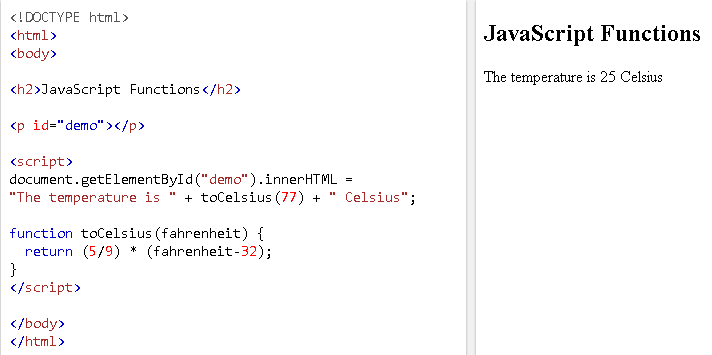

A JavaScript function is a block of code designed to perform a particular task.
A JavaScript function is executed when "something" invokes it (calls it).
A JavaScript function is defined with the function keyword, followed by a name, followed by parentheses ().
- Function names can contain letters, digits, underscores, and dollar signs (same rules as variables).
- The parentheses may include parameter names separated by commas:(parameter1, parameter2, ...)
- The code to be executed, by the function, is placed inside curly brackets: {}
- Function parameters are listed inside the parentheses () in the function definition.
- Function arguments are the values received by the function when it is invoked.
- Inside the function, the arguments (the parameters) behave as local variables.
The code inside the function will execute when "something" invokes (calls) the function:
- When an event occurs (when a user clicks a button), see funcDemo1 or 2
- When it is invoked (called) from JavaScript code
- Automatically (self invoked)
- When JavaScript reaches a return statement, the function will stop executing.
- If the function was invoked from a statement, JavaScript will "return" to execute the code after the invoking statement.
- Functions often compute a return value. The return value is "returned" back to the "caller", see funcDemo1:
Variables declared within a JavaScript function, become LOCAL to the function
Local variables can only be accessed from within the function, see funcDemo2
Functions can be used the same way as you use variables, in all types of formulas, assignments, and calculations.
